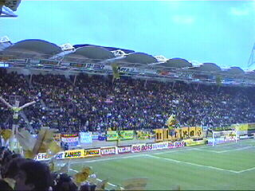
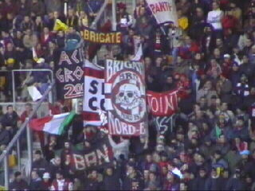
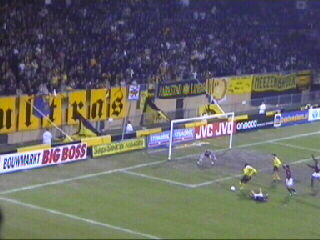

| RRoda JC - AC Milan (0-1) 19 februari 2002 |

19.800 toeschouwers zagen in een ongekend
sfeervol Parkstad Limburg Stadion de historische
1/8 Uefacufinalewedstrijd Roda JC - AC Milan.

Het volle uitvak was gevuld met veel "Belgische
Italianen".
Het publiek kreeg vlaggetjes.
Roda trad aan in nieuwe (Uefacup)-tenues.
Voor aanvang van de wedstrijd werd er een
indrukwekkende minuut stilte in acht genomen
voor de overleden oud-Roda speler John Eriksen.
Opstootje tussen Vrede en Gattuso.
Aanvoerder Albertini zwaait al met zijn handje
terwijl Vrede bij de Engelse scheidsrechter de
straf probeert te ontlopen. Deze geeft echter aan
zowel Vrede als Gattuso de gele kaart.
Hoewel Milan in de eerste helft domineerde
kreeg Roda kansen zoals hier waar een schot
van Lawal net voorlangs gaat.

Sjevtsjenko neemt de bal aan van (de buitenspel
staande) Pirlo en legt de bal terug op Mari.....
.....welke onhoudbaar inschiet (29).
In de tweede helft kwam er veel meer dreiging
van Roda en werd het publiek herhaaldelijk op
heerlijke acties getracteerd. Hier een vrije trap
genomen door Luijpers.
Abbiati met een goede redding.

Schot van de voortreffelijk spelende Lawal.
In de slotfase nog een schot van Sonko dat helaas
door Anastasiou geblokt wordt.
De schade blijft beperkt tot 0-1.
Niet Vrede, maar Luijpers bemachtigt het shirt
van Sjevtsjenko.

Maar Regillio heeft een vlaggetje bemachtigd.
Het supportershome was tot de nok gevuld.
©KPD